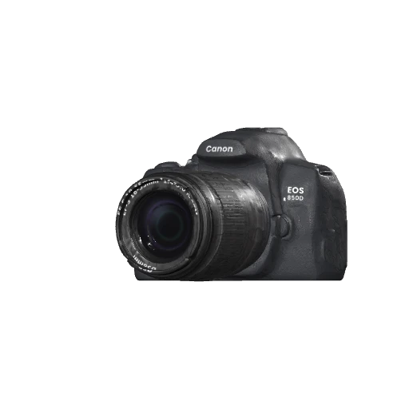
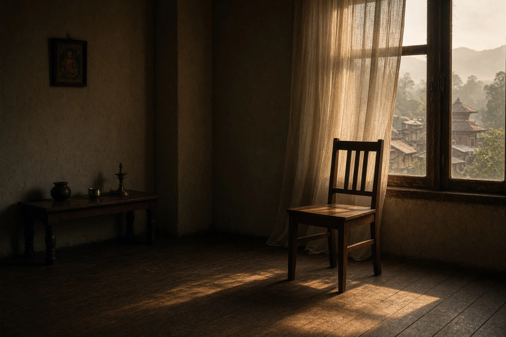
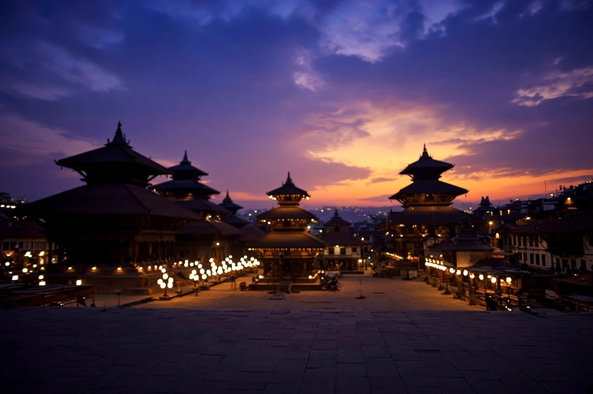
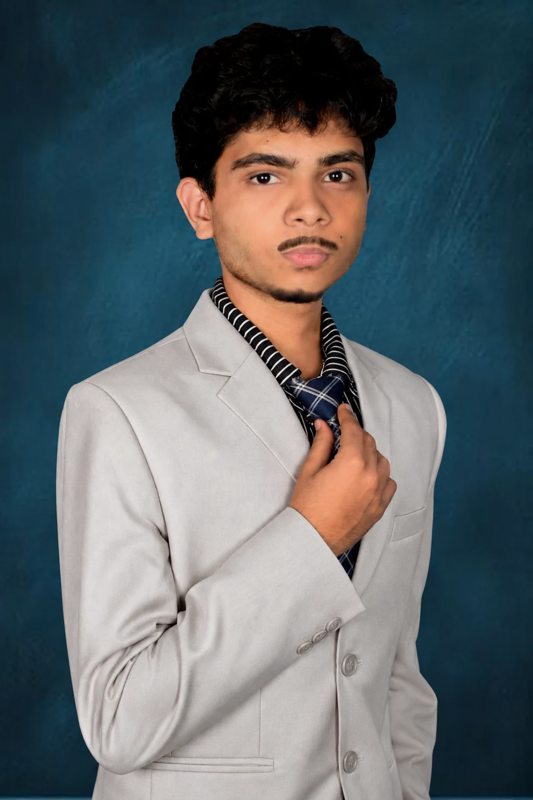

Canon EOS 850D
For still frames and moving stories.

A PERSONAL VISUAL JOURNAL
Photographer. Filmmaker. Curious by nature.
I'm a student and creative from Nepal.
I capture stories through light, motion and perspective.

01 / THE PHOTOGRAPHIC ARCHIVE
People. Places. Fleeting light.
A home for the frames I keep.
Sample images carried over from the earlier portfolio. Original photographs will replace these studies.
THE CAMERA BEHIND THE FRAMES
Learning the possibilities of the tools I have.
Taking them a little further with every shoot.
For still frames and moving stories.
From wider scenes to closer details.
THE EYE BEHIND THE CAMERA
I'm Umanga, a creative from Nepal. I photograph people, streets and the small moments that are easy to walk past.
Sometimes the story needs a still frame. Sometimes it needs motion. And sometimes I build the space it lives in.
A little more about me ↗02 / CINEMATOGRAPHY
Rain on a window. A street after dark.
Finding a rhythm in everyday life.
THE FEELING IN THE FRAME
Exploring how contrast, color and restraint
change the way an image feels.


03 / A WORK IN PROGRESS
I'm a student, photographer and filmmaker learning by making. My work starts with observation: how light falls, how people move, and what a place feels like.
Photography and cinematography are my main focus. Design and development let me take that same attention to detail into websites, interfaces and personal projects.
EXPERIENCE & EDUCATION
Personal shoots, cinematic reels, portraits, street observations and experiments with light. Building a visual language one project at a time.
Helping with school shoots and finding practical ways to tell stories through photographs and video.
School studies alongside self-directed learning in photography, filmmaking, design and programming.
Practising color grading, editing, web development and Flutter through projects I can build and use.
04 / BEYOND THE VIEWFINDER
The same curiosity.
A different kind of canvas.
A personal AI project by Umanga Rimal.
The detailed case study and project link will be added here.
An editorial portfolio built around photography, a 3D camera and scroll-driven motion. The visual work comes first; the technology gives it room to breathe.
Return to the opening ↑A learning app project for SEE students to share question photos and help each other with answers. Built with Flutter and Firebase.
CURRENTLY / ALWAYS LEARNING
Natural light, thoughtful compositions and color that supports a story. Getting more from the camera I already have.
Making everyday moments feel cinematic through pacing, sound and intentional camera movement.
Street walks, bird photography, trekking, gaming and fitness. Different ways to notice, explore and reset.
05 / START A CONVERSATION
For shoots, creative collaborations
or something we haven't imagined yet.